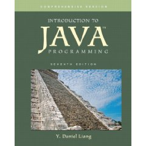

CS 170 Syllabus, Summer 2009

Hello, my name is Stephen Gilbert. Welcome to the CS 170, Java Programming I information page. Java Programming I is a transfer class for Computer Science (as well as some other science) majors. CS 170 is typically the first class in the Computer Science sequence, and is required if you intend to take advantage of the UCI SMART-ICS transfer program.
In Summer 2009, we'll be offering one section of CS 170, hybrid class, where half of the class will be conducted on campus and half will be conducted online. The on-campus portion of the class will meet twice a week, on Monday and Wednesday evenings, from 6:00 to 8:25 PM in the OCC Computing Center.
- Where and when is the course, and who's teaching?
- What does the course cover, and what do I need to know before I enroll?
- How can I successfully complete the course?
- What textbook and software will I need for the course?
- Course policies concerning attendance, late work, etc.
Who, Where, and When
Let's start with the where and when. The on-campus portion of CS 170 meets in room 105 in the Clark Computing Center. (Map: building 73 in the upper-left corner, across from the softball field, by the Adams St. Parking lot.).
- Section 10308 meets on Monday and Wednesday evenings from 6:00 to 8:25 PM
In addition to these class meetings you'll have 6 hours of online lectures that you'll complete "on your own" each week. (Remember that the Summer class is condensed into half the time. During a regular semester, you would have 3 hours of online lectures per week instead.) To complete the online portion of the coursework, you must have a computer that :
- has Internet access
- has the Flash player installed so you can watch some of the screencast material.
- has PDF viewing software like Acrobat Player
- have the Java Runtime Environment (Version 5 or 6) installed.
If you want to complete your programming assignments at home, your computer must also allow you to install software development tools like Eclipse.
You can use the computers in the Clark Computing Center open lab if you don't have a computer with Internet access at home. You can use the computers at a public library to read the portions of the online lectures and perhaps to do some exercises, but probably not to do the homework assignments, since library computers typically would not have the Java development software installed.
NOTE: During the Summer, the Computing Center is only open Monday through Thursday. It will not be open on Friday or the Weekend.
The online portion of CS 170 is not "work at your own pace". All exercises, quizzes, and assignments are due weekly just as with any traditional course; however, because you can arrange your hours any way you see fit, the hybrid format class is a great opportunity for those with irregular schedules since you only have to come to campus half as often.
Instructor Contact Information
- Stephen Gilbert
- Office : Clark Computing Center F
- Office hours : one hour before class
- Email : StephenGilbert@gmail.com or sgilbert@occ.cccd.edu
- Office phone : (714) 432-0202 ext 21173
- Home page : http://faculty.orangecoastcollege.edu/sgilbert/
What is CS 170 All about?
Here's the official course description from the OCC catalog:
This is a beginning course in the Java programming language. Students will learn object-oriented programming, and will create applets which can be incorporated into HTML documents for the World Wide Web.
At OCC, CS 170 is one of the first courses in the Computer Science major for students who intend to transfer to a 4-year institution. This class will introduce you to the principles of Computer Science, using the Java programming language; it isn't a "Web programming class" like HTML or JavaScript.
Prerequisites
In this class, you will learn to write programs, but you won't learn how to use a computer. Before you enroll, read the following section, and make sure you feel you've mastered the skills I've listed here. There is no prerequisite for this course but I assume that you are "computer literate". In the context of this course, that means you know how to:
- Install and run programs on your computer
- Create and save plain text files using a text editor
- Copy, move, delete and find files and folders
- Browse the World Wide Web and use email.
If you don't feel comfortable doing these things, you should take either CIS 100 or CS 111, which are basic "computer literacy" courses.
You do not have to have any programming experience, but you might find the course easier if you've successfully completed a course in another programming language such as Visual Basic, Pascal, or C++. You'll also find the course easier if you know how to use a command-line interface, such as the MS-DOS Command Prompt, the Unix shell, or the Mac OS/X terminal application. (One of your exercises during the first week of class is to complete a tutorial on using the Windows command line, because we'll be using Windows in the on-campus classes.)
Goals and Objectives
In this course you'll learn how to write computer programs, using the Java programming language. On successful completion of the course, you will be able to:
- Explain the Java programming model, particularly its support for object-oriented software development, and cite its strengths and weaknesses.
- Learn to use a variety of development tools for creating Java programs.
- Design and code Java programs, applets and applications, console and GUI programs, using Java's Swing and AWT class libraries.
- Read and understand the official Java documentation sufficiently well that it serves as a primary vehicle for further learning.
In addition, the class now has Student Learning Outcomes or SLOs. Students will be able to:
- Create, compile, execute, and test Java applications and applets by applying object-oriented programming techniques, including designing classes and methods, and implementing concepts of polymorphism and inheritance.
- Implement selection structures (if/else and switch), repetition structures (while, do/while, and for), and one- and two-dimensional arrays.
How can I succeed in CS 170?
Here's the information you need to succeed in CS 170. Below you'll find information about the course workload, the exams, quizzes, exercises, discussion, and homework, as well as information on how you'll be graded.
How much time will I have to spend on CS 170?
Everybody learns in different ways and at different speeds; in general though, you should plan on spending about two hours each week outside of class, for each class lecture hour, if you're an average student and want to receive an average (C-B) grade. For CS 170, that translates to about fourteen hours a week, in addition to the eleven hours of class time; the eleven hours of class time includes both the in-person class time and the online class lectures. If you're a good student or you're satisfied with a lower grade, you may get by with less. If you have difficulty with the material, or if you want to receive an A in the course, you'll probably have to spend more time.
Rather than trying to get your extra hours in by staying up all night every Saturday and Sunday, try to budget your time. Spend a couple hours every day, one hour reading the material, and one hour in the computer lab, or on your computer at home, working on problems. During the Summer, I'd also suggest coming in and working during the day, when the Computing Center is open. Since class doesn't start until 6:00, you could get six of those hours in just by coming to school at 3:00 PM on Monday and Wednesday.
Remember, also, that half of this class is online. The online lectures and exercises are part of your in-class time, not part of the additional study and homework time referred to here.
What exams and quizzes will I take?
There are 2 exams in this class, one midterm and one final. Each exam will have two components: an objective written exam, and a programming exam where you'll be asked to create a program in the lab. You'll have the entire class period for each exam. The midterm exam will count for about 25% of your grade and the final will count for about 35% (60% total).
Quizzes
There will be weekly online quizzes which you'll take using the OCC Blackboard Vista LMS. Quizzes are designed to make sure you read the book, understand the material and to highlight any areas of concern. The quizzes will count for about 10% of your final grade.
What about programming exercises, labs and homework?
Learning to program is a lot like learning to play the tuba; you'll never be any good unless you practice. To help you do this, you'll spend most of your homework time writing programs. Each week I'll assign some problems from the textbook and some problems that I've made up.
Some of these will be short problems that you can do in a few minutes; most will take between fifteen minutes to a half hour. At least one problem each week should take you a couple of hours to complete.
You will turn in all of your assignments electronically. Programs will be graded on correctness and style, usually by running them against some sample data, and by checking the output with a style-checking program like Checkstyle. For some of the problems, we'll use an automated program checker named Web-CAT from Virgina Tech. Many of the practice problems (and some of the test problems as well) will come from Nick Parlante's Javabat.com.
The weekly programming assignments and in-class lab exams will be worth about 30% of your grade.
Class Participation
One of the greatest learning resources at your disposal are the other students you'll meet in this class. Take advantage of them; ask the person next to you to help you with something you don't understand, or offer to help someone else who is struggling.
To encourage you to help each other, I want you to use the online discussion area to ask all of your technical questions, instead of sending me an email message. Let's keep email for "personal" correspondence—things like "I'll be missing class this Tuesday", instead of questions like "Why do I get this error message when I compile?" If you ask these types of questions on the discussion board, you'll help all the other students who are having the same problem, but didn't think to ask. (I will answer questions posted on the discussion board, after I've given your fellow students an opportunity to respond. I also read all of the messages on the discussion board, even if I don't reply.)
I will post class announcements and general tips in the Announcements section on the discussion board. You should make sure you check regularly (at least a couple times a week) for new announcements.
How will I be graded?
You may take this course for a grade, or on a CR/NCR basis. If you take the course for credit/no-credit, you must obtain a score equivalent to a "C" to get credit. (If you're transferring, though, make sure that the institution you're transferring to will accept CR/NCR; most institutions won't if it's a requirement for your major.)
Grades will be assigned based on the following weights:
| 1 Midterm Exam | 125 |
| 1 Final Exam | 175 |
| 10 Quizzes @ 5 points ea. | 50 points |
| Homework and Lab Exams | 200 points |
As you can see, this adds up to 550 possible points you can earn; there is no extra-credit. In lieu of extra-credit (or makup-assignments), You will be graded using 525 as the maximum possible "base" points. Letter grades will be assigned using the following scale, based upon a maximum of 525 points:
| Grade | Percent |
| A | 90 |
| B | 80 |
| C | 67 |
| D | 55 |
| F | <55 |
At my discretion, I will "curve" the exam points if the overall results are too low. I won't "reverse-curve" them, however; if everone gets high grades, I won't lower your grade to fit the curve. No student will receive a grade less than that prescribed by the above schedule.
What textbook and software will I need?
|
 |
Introduction to Java Programming, 7th Edition by Y. Daniel Liang ISBN: 9780136012672 © 2009 The text should be available in the OCC Bookstore or from Amazon and other online booksellers. At Amazon, it costs about $103 new. For this class, you can purchase the Brief edition instead (although not from the bookstore). There was only a $10 difference between the Brief and Comprehensive prices, but there is about a $20 difference if you purchase from Amazon. |
Many of you prefer to purchase a used book (or share a book with another student). You can even purchase an entirely different textbook if you like. The textbook is designed to give you more information than the online lessons do, but you don't need the textbook to successfully pass the class.
Software
All of the software you need to complete this course is installed on the computers in the OCC Clark Computing Center. However, many of you will want to work at home, especially if you are in the online section. Here is a short list of the software you'll need to install on your computer to complete the course. All of this software is free.
Java Software
You need to have version 5 or version 6 of the Java Runtime
Environment installed on your computer (if you want to do your
homework at home.) To get the software just go to
http://java.com,
click the "Download" button and follow the instructions.
We will not be using the Java Software Development Kit (SDK or JDK)
this semester.
IDE
This semester rather than switching between several different
development environments, we'll be using the
Eclipse IDE the entire semester.
Eclipse is a free, open-source program, written
in Java, and originally created by IBM. Eclipse is the
basis for IBM's Websphere Application Developer IDE.
Eclipse is a very sophisticated and complex program,
that is fairly hard to learn. It also requires a fairly
up-to-date machine with at least 256 MB of memory,
preferrably more. Eclipse also has many features not
found in simpler IDEs, such as code-completion and
the ability to directly work with a CVS version
control system.
All of this software is installed on the machines in the Computing Center.
What are the "rules" for this course?
Late Work
One of Murphy's laws says "if something can go wrong, it will". Try to keep this in mind as you plan your coursework. The network in the lab may be down, you may accidentally reformat your disk, you might have more difficulty with a problem than you expect, and, yes, your dog might even eat your homework. (I keep a set of student disks that my dog ate, just to remind myself that this is not always a fictitious excuse.)
Since all of these things can happen, you need to emulate the Boy Scouts, and "be prepared." The best preparation is to do your work early, not late, because I will not accept late work, period.
Instead of allowing you to turn in late work, I allow you to earn a certain amount of extra credit as "wiggle points" (25 in this class). That means, you could skip 5 quizzes or homework assignments, and still end up with an almost perfect score. Of course, if you do all of the assignments the extra points will be extra credit.
Attendance and Withdrawal
Quiz material is taken from the lecture, as well as from the textbook, so it's important for you to complete the material. If you miss four or more classes, you may be dropped without notice.
Don't assume, though, that you will be automatically dropped if you fail to complete the material. It is your responsibility to withdraw from any class. If you stop attending, yet fail to withdraw, you will receive a grade of 'F'.
Please pay special attention to the OCC drop deadlines. Every semester I have students who want to drop the class after the deadline to drop has already passed. Those students end up getting an 'F' in the class if they are unable to complete the coursework. I do not give Incomplete grades.
Academic Honesty
Programming by its nature relies on learning from the work of others. You are encouraged to examine each other's code and to discuss various approaches and coding styles. You won't really learn anything, though, if you don't "try it yourself".
In this regard, discussing the general method used to solve a problem is certainly encouraged. Taking another student's source code and modifying it is really counter-productive; you learn to program by working out the programming exercises and assignments. If you don't do the assignments yourself, you won't learn how to program, and you won't be able to pass the programming exams.
When it comes to testing time, I expect you to maintain a high level of academic honesty. Cheating on exams will result in course failure. (The quizzes are open book, so, as long as you find the answers yourself, that's OK.)
Disruptive Behavior
You are entitled to an environment that encourages learning, as are all your fellow students. You should not behave in a manner that negatively impacts other class members. In a classroom. In an online class, disruptive behavior includes "flaming" or harassing email, as well as posting offensive material on your class Web site.
I expect all of you to be polite, respectful, and helpful to your fellow students; in short, I expect you to act like adults should act. If, in my judgment, your behavior negatively impacts the rest of the class, you may be subject to disciplinary action.
Disabilities
If you have a disability that may impede your ability to successfully complete this course, you should contact the Disabled Student's Center (432-5807 or 432-5604 TDD) not later than the first week of the course. Their staff will assist you in arranging accommodations that can help you meet course requirements.
Reservation of Rights
I reserve the right to change this syllabus, including, without limitation, these policies, without prior notice.